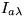
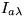

En l'applet següent es visualitza una esfera i es poden modificar els
paràmetres ka,  i . Observeu l'efecte de modificar primer
ka, després i per últim
i . Observeu l'efecte de modificar primer
ka, després i per últim  . Què succeeix si
tots els valors són iguals a 1.0?. Proveu de modificar els diferents
paràmetres i observar el seu resultat en l'escena final.
. Què succeeix si
tots els valors són iguals a 1.0?. Proveu de modificar els diferents
paràmetres i observar el seu resultat en l'escena final.